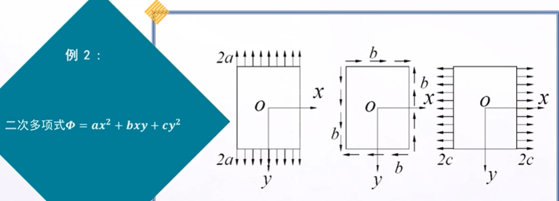
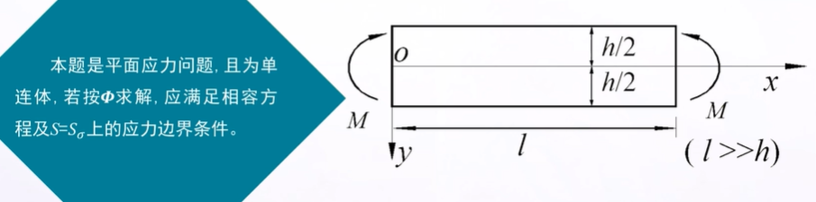
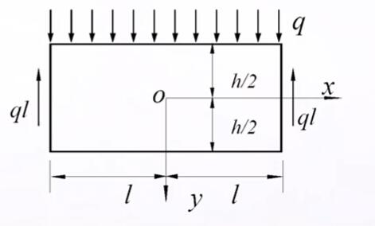

弹性力学-平面问题的直接坐标解答
本文最后更新于：1 年前
逆解法与半逆解法
按应力函数求解
- $A$内相容方程${\nabla ^{\rm{4}}}\Phi {\rm{ = }0}$
- $S = {S_\sigma }$上应力边界条件：
$$ \begin{array}{l} {(l{\sigma _x} + m{\tau _{yx}})_s} = \overline {{f_x}} \\ {(m{\sigma _y} + l{\tau _{xy}})_s} = \overline {{f_y}} \end{array} $$
逆解法
求解过程：
1. 先找出满足${\nabla ^{\rm{4}}}\Phi {\rm{ = }0}$的解$\Phi$;2. 代入${\sigma _x} = \frac{{{\partial ^2}\Phi }}{{\partial {y^2}}} - {f_x}x,{\sigma _y} = \frac{{{\partial ^2}\Phi }}{{\partial {x^2}}} - {f_y}y,{\tau _{xy}} = - \frac{{{\partial ^2}\Phi }}{{\partial x\partial y}}$，求出应力分量
3. 在给定的边界形状$S$下，由应力边界条件方程反推出各边界上的面力
4. 最后得出在给定面力作用下的解答，就是上述$\Phi$和应力
半逆解法
求解过程：
1. 假设应力分量的函数形式（根据受力情况，边界条件等）
2. 由盈利函数形式，推测$\Phi$的函数形式
3. 代入${\nabla ^{\rm{4}}}\Phi {\rm{ = }0}$，解出$\Phi$
4. 由式子${\sigma _x} = \frac{{{\partial ^2}\Phi }}{{\partial {y^2}}} - {f_x}x,{\sigma _y} = \frac{{{\partial ^2}\Phi }}{{\partial {x^2}}} - {f_y}y,{\tau _{xy}} = - \frac{{{\partial ^2}\Phi }}{{\partial x\partial y}}$
5. 校核全部应力边界条件（对于多连体，还需满足位移单值条件）
6. 如满足为正确解答，否则修改假设。
例题

矩形梁的纯弯曲问题

求解步骤：
1. 由逆解法得出。可取$\Phi = a{y^3}$，且满足${\nabla ^{\rm{4}}}\Phi {\rm{ = 0}}$2. 求应力${\sigma _x} = 6ay,{\sigma _y} = {\tau _{xy}} = 0$
3. 检验应力边界条件：原则为
1. 先校核主要边界（大边界），必须精确满足应力边界条件
2. 再校核次要边界（小边界），若不能精确满足应力边界条件，则应用圣维南原理，用积分的应力边界条件代替
4. 解出主要边界的应力状态${\sigma _x} = \frac{{12M}}{{{h^3}}},{\sigma _y} = 0,{\tau _{xy}} = 0$与材料力学的，根据平截面假定推出的应力公式${\sigma _x} = \frac{{My}}{{{I_z}}}$是相同的。即平截面假定可能是精确的
位移分量的求出
提出问题：
在按应力求解中，若已得出应力，如何求出位移？
以纯弯曲问题为例，已知${\sigma _x} = \frac{{My}}{{{I_z}}},{\sigma _x} = {\tau _{xy}} = 0$试求解其位移。解法：
先通过物理方程求应变：
$$
\begin{array}{l}
{\varepsilon _x} = \frac{1}{E}({\sigma _x} - \mu {\sigma _y}) = \frac{M}{{EI}}y\\
{\varepsilon _y} = \frac{1}{E}({\sigma _y} - \mu {\sigma _x}) = - \frac{{\mu M}}{{EI}}y\\
{\gamma _{xy}} = \frac{{2(1 + \mu )}}{E}{\tau _{xy}} = 0
\end{array}
$$
再代入几何方程求位移：
$$
\begin{array}{l}
\frac{{\partial u}}{{\partial x}} = {\varepsilon _x} = \frac{M}{{EI}}y\\
\frac{{\partial v}}{{\partial y}} = {\varepsilon _y} = - \frac{{\mu M}}{{EI}}y\\
\frac{{\partial u}}{{\partial x}} + \frac{{\partial v}}{{\partial y}} = {\gamma _{xy}} = 0
\end{array}
$$
$$
\begin{array}{l}
u = \frac{M}{{EI}}xy + {f_1}(y)\\
v = - \frac{{\mu M}}{{EI}}{y^2} + {f_2}(x)\\
\frac{{Mx}}{{EI}} + \frac{{d{f_2}(x)}}{{dx}} = - \frac{{d{f_1}(y)}}{{dy}}( = \omega )
\end{array}
$$
解出：
$$ \begin{array}{l} {f_1}(y) = - \omega y + {u_0}\\ {f_2}(x) = - \frac{M}{{2EI}}{x^2} + \omega x + {v_0} \end{array} =>\\ \begin{array}{l} u = \frac{M}{{EI}}xy - \omega y + {u_0}\\ v = - \frac{{\mu M}}{{2EI}}{y^2} - \frac{M}{{2EI}}{x^2} + \omega x + {v_0} \end{array} $$由边界约束条件,确定刚体的位移分量$u,v,\omega $
- 弯应力${\sigma _x}$与材料力学的解相同
- 铅直线的转角$\beta = \frac{{\partial u}}{{\partial y}} = \frac{M}{{EI}}x - \omega $,故在任一截面$x$处,平截面假设成立
- 纵向纤维的曲率$\frac{1}{\rho } = - \frac{{{\partial ^2}v}}{{\partial {x^2}}} = \frac{M}{{EI}}$同材料力学的结果,故在纯弯曲情况下,弹性力学与材料力学的解相同。
简支梁受均布荷载
题目
简支梁$ {2lh1} $，受均布荷载$q$及两端支承反力$ql$

求解过程
假设应力分量
由材料力学${\sigma _x} \propto M,\tau \propto {F_s},{\sigma _y} \propto q$，因为${\sigma _y} \propto q$为常数,可假设${\sigma _y} = f(y)$由应力分量推出应力函数
$\frac{{{\partial ^2}\Phi }}{{\partial {x^2}}} = {\sigma _y} = f(y)$ 对$x$积分，$\frac{{\partial \Phi }}{{\partial x}} = xf(y) + {f_1}(y)$ 对$x$再积分 $\Phi = \frac{{{x^2}}}{2}f(y) + x{f_1}(y) + {f_2}(y)$将$\Phi $代入相容方程，$\Phi $
x的0，1，2次放的系数等于0
解出
由$\Phi $求应力
对称条件——由于结构和荷载对称于$y$轴,故$\Phi ,{\sigma _x},{\sigma _y}$应为x的偶函数，${\tau _{xy}}$为x的奇函数，故$E=F=G=0$
考察边界条件
- 每个边界都要满足相应的边界条件
- 复核过程中，求得待定系数
弹性力学解与材料力学解
x方向的正应力第一项与$q{(\frac{l}{h})^2}$同阶，与材料力学解相同
第二项与$q$同阶（弹性力学的修正项）
x面上y方向上的切应力与$q{(\frac{l}{h})^2}$同阶，与材料力学解相同
y方向上的正应力与$q$同阶，材料力学不计。
锲形体受重力及液体压力
题目
设有锲形体,左面垂直,顶角为$\alpha$,下端无限长,受重力及齐顶液体压力$ {f_x}=0, {f_y} = {{\rho _1}}g\$求解-量纲分析法
假设应力
因为应力$ \propto {\rho _{\rm{1}}}g,{\rho _2}g$,而应力的量纲只比${\rho _{\rm{1}}}g,{\rho _2}g$高一次.
所以应力$=({\rho _{\rm{1}}}g,{\rho _2}g) \times (x,y一次式)$
即可假设应力 为x,y的一次式
得应力函数关系式
$\Phi {\rm{ = }}a{x^3} + b{x^2}y + cx{y^2} + d{y^3}$ 满足相容方程: ${\nabla ^4}\Phi = 0$求解应力
考察边界条件
本题两个大边界,应力边界条件必须严格满足应力边界条件
$x=0$ 铅直面
${({\sigma _x})_{x = 0}} = - {\rho _2}gy$,解出$d = \frac{{{\rho _2}g}}{6}$ ${({\tau _{xy}})_{x = 0}} = 0$,解出$c=0$ $x=y{\tan \alpha}$ 斜边界 $$ \begin{array}{l} {\sigma _x} = - {\rho _2}gy\\ {\sigma _y} = ({\rho _1}gy\cot \alpha - 2{\rho _2}g{\cot ^3}\alpha )x\\ + ({\rho _2}g{\cot ^2}\alpha - {\rho _1}g)y\\ {\tau _{xy}} = - {\rho _2}gx{\cot ^2}\alpha \end{array} $$解答的应用
- 作为重力的解答参考-坝体中部的应力,接近锲形体的解答
- 重力坝规范规定的解法-材料力学解法
- 重力坝的精确分析,可按有限单元法进行
本博客所有文章除特别声明外，均采用 CC BY-SA 4.0 协议 ，转载请注明出处！